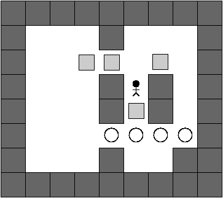

| Source file: | sokoban.{c, cpp, java} |
| Input file: | sokoban.in |
 Soko-ban is a Japanese word for a warehouse worker, and the name of a classic computer game created in the 1980s. It is a one-player game with the following premise. A single worker is in an enclosed warehouse with one or more boxes. The goal is to move those boxes to a set of target locations, with the number of target locations equalling the number of boxes. The player indicates a direction of motion for the worker using the arrow keys (up, down, left, right), according to the following rules.
The game has been studied by computer scientists (in fact, one graduate student wrote his entire Ph.D. dissertation about the analysis of sokoban). Unfortunately, it turns out that finding a solution is very difficult in general, as it is both NP-hard and PSPACE-complete. Therefore, your goal will be a simpler task: simulating the progress of a game based upon a player's sequence of keystrokes. For the sake of input and output, we describe the state of a game using the following symbols:
| Symbol | Meaning |
| . | empty space |
| # | wall |
| + | empty target location |
| b | box |
| B | box on a target location |
| w | worker |
| W | worker on a target location |
For example, the initial configuration diagrammed at the beginning of this problem appears as the first input case below.
Input: Each game begins with a line containing
integers R and C,
where
4 ≤ R ≤ 15 represents the
number of rows, and 4 ≤ C ≤ 15 represents the
number of columns.
Next will be R lines
representing the R rows from top to bottom, with each
line having precisely C characters, from
left-to-right. Finally,
there is a line containing at most 50 characters
describing the player's sequence of keystrokes, using the symbols
U, D, L, and R respectively
for up, down, left, and right.
You must read that
entire sequence from the input, even though a particular game
might end successfully prior to the end of the sequence.
The data set ends with the
We will guarantee that each game has precisely one worker, an equal number of boxes and locations, at least one initially misplaced box, and an outermost boundary consisting entirely of walls.
Output: For each game, you should first output a line identifying the game number, beginning at 1, and either the word complete or incomplete, designating whether or not the player successfully completed that game. Following that should be a representation of the final board configuration.
| Example input: | Example output: |
| 8 9 ######### #...#...# #..bb.b.# #...#w#.# #...#b#.# #...++++# #...#..## ######### ULRURDDDUULLDDD 6 7 ####### #..#### #.+.+.# #.bb#w# ##....# ####### DLLUDLULUURDRDDLUDRR 0 0 | Game 1: incomplete ######### #...#...# #..bb...# #...#.#.# #...#.#.# #...+W+B# #...#b.## ######### Game 2: complete ####### #..#### #.B.B.# #.w.#.# ##....# ####### |